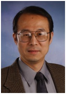

CloudFlow2014
3rd International Workshop on Workflow Models, Systems, Services and Applications in the Cloud
To be held in conjunction with the 28th IEEE International Parallel & Distributed Processing Symposium (IPDPS) 2014, Arizona Grand Resort PHOENIX (Arizona) USA, May 19-23, 2014
Keynote
Cloud Programming Models |
Sharing, integrating and executing different workflows in heterogeneous multi-cloud systems |
|
 |
||
Yi Pan, Georgia State University |
Peter Kacsuk, MTA-SZTAKI, Budapest, Hungary | |
Cloud computing has emerged rapidly as a growing paradigm of on-demand access to computing, data and software utilities using a usage-based billing model. Users essentially rent resources and pay for what they use and everything including software, platform, and infrastructure is as a service. In this talk, I will give a review of supercomputing, cluster computing, grid computing and cloud computing. Comparisons of these computing domains and programming models, their limitations and potential solutions will be included in this talk. In particular, I will point out the shortcomings and limitations of current cloud computing programming models and propose possible solutions. Current MapReduce model and its variants have succeeded in data-parallel applications such as database operations and web searching; however, they are still not effective for handling complex data and task dependencies in many compute-intensive applications such as graph applications and data analytics problems. We propose several approaches to this problem through extension of current programming models, automatic translation from sequential codes to cloud codes, detection of data and task parallelism and effective scheduling on cloud programming models. Some preliminary theoretical and experimental results will also be reported in this talk.
Yi Pan is a Distinguished University Professor and Chair of Department of Computer Science at Georgia State University. Dr. Pan received his B.Eng. and M.Eng. degrees in computer engineering from Tsinghua University, China, in 1982 and 1984, respectively, and his Ph.D. degree in computer science from the University of Pittsburgh, USA, in 1991. His profile has been featured as a distinguished alumnus in both Tsinghua Alumni Newsletter and University of Pittsburgh CS Alumni Newsletter. Dr. Pan's research interests include parallel and cloud computing, wireless networks, and bioinformatics. Dr. Pan has published more than 150 journal papers with over 50 papers published in various IEEE Transactions. In addition, he has published over 150 papers in refereed conferences. He has also co-authored/co-edited 37 books. His work has been cited more than 3600 times. Dr. Pan has served as an editor-in-chief or editorial board member for 15 journals including 6 IEEE Transactions. He is the recipient of many awards including IEEE Transactions Best Paper Award, IBM Faculty Award, JSPS Senior Invitation Fellowship, IEEE BIBE Outstanding Achievement Award, NSF Research Opportunity Award, and AFOSR Summer Faculty Research Fellowship. He has organized many international conferences and delivered more than 20 keynote speeches at various international conferences. |
The results of the SHIWA and SCI-BUS projects open a new horizon for research communities who would like to use their workflows in collaboration with other workflow user communities and would like to run their workflows in heterogeneous multi-cloud systems. There is a large number of different workflow systems (ASKALON, Galaxy, Kepler, Moteur, Taverna, Triana, WS-PGRADE, etc.) widely used by different user communities. Before the SHIWA project these workflow user communities were typically isolated not able to collaborate via their workflows. The SHIWA consortium has created the SHIWA Workflow Repository to enable publish and share all these types of workflows and the SHIWA Portal and SHIWA Desktop to enable integrate them into complex meta-workflows based on the Coarse-Grained Interoperability (CGI) and Fine-Grained Interoperability (FGI) concept. The DCI Bridge developed by SHIWA enables the execution of these workflows in many different distributed computing infrastructures including grids (ARC, gLite, Globus, UNICORE), desktop grids (BOINC) and clusters (PBS, LSF, Condor). Within the SCI-BUS project DCI Bridge was extended with clouds (Amazon, Eucalyptus, IBM, OpenNebula, OpenStack) via the CloudBroker Platform. As a result there are many possibilities for workflow users to combine their workflows with other workflows and run these complex meta-workflows in heterogeneous multi-cloud systems or in hybrid grid-cloud systems. For example, a Taverna user can easily create a meta-workflow that runs a Kepler workflow as a node of the Taverna workflow and execute this meta-workflow in a hybrid cloud-grid system where the Kepler workflow runs in a Globus grid and the Taverna nodes run in OpenStack and OpenNebula clouds as web services. The talk will explain in detail those technical innovations of SHIWA and SCI-BUS that together resulted in such a flexible workflow building and execution environment. |
|
Péter Kacsuk received his MSc and university doctorate degrees from the Technical University of Budapest, Hungary in 1976 and 1984, respectively. He received the Kandidat degree (equivalent to PhD) from the Hungarian Academy in 1989. He habilitated at the University of Vienna in 1997. He received his professor title from the Hungarian President in 1999 and the Doctor of Academy degree (DSc) from the Hungarian Academy of Sciences in 2001. He is currently the Head of the Laboratory of Parallel and Distributed Systems (LPDS), Computer and Automation Research Institute of the Hungarian Academy of Sciences.
|